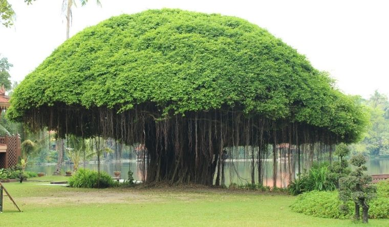
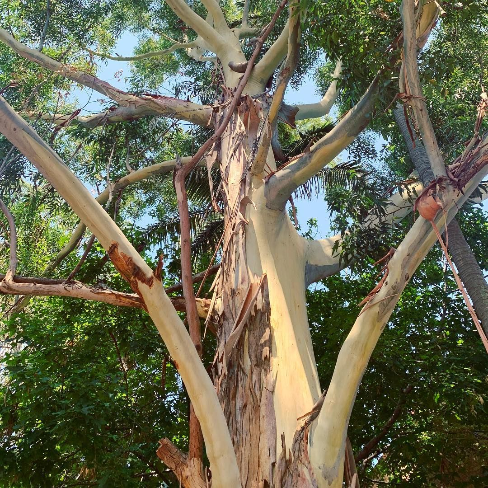
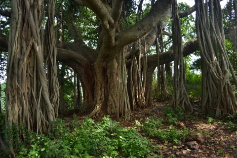
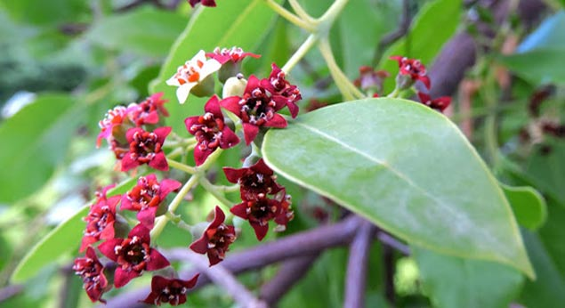

Mahogany
Mahogany, any of several tropical hardwood timber trees, especially certain species in the family Meliaceae. One such is Swietenia mahagoni, from tropical America. It is a tall evergreen tree with hard wood that turns reddish brown at maturity.
Red Alder
This list says the Red Alder is the most common tree worldwide, growing fast in barren or burned areas. Other sources say the pines are the world's most abundant trees. About 30% of the earth is covered with trees, rapidly dwindling.
Pinus longaeva
Pinus longaeva is a long-living species of bristlecone pine tree found in the higher mountains of California, Nevada, and Utah. Methuselah is a bristlecone pine that is 4,852 years old and has been credited as the oldest known living non-clonal organism on Earth.

Salix herbacea
The dwarf willow, least willow or snowbed willow, is a species of tiny creeping willow adapted to survive in harsh arctic and subarctic environments, it is one of the smallest of woody plants.

Banyan
A banyan, also spelled "banian", is a fig that begins its life as an epiphyte, i.e. a plant that grows on another plant, when its seed germinates in a crack or crevice of a host tree or edifice

Socotra Dragon Blood
Dracaena cinnabari, the Socotra dragon tree or dragon blood tree, is a dragon tree native to the Socotra archipelago, part of Yemen, located in the Arabian Sea. It is so called due to the red sap that the trees produce

Sydney Blue Gum
Eucalyptus saligna, commonly known as the Sydney blue gum or blue gum, is a species of medium-sized to tall tree that is endemic to eastern Australia.

Ficus benghalensis
Ficus benghalensis, commonly known as the banyan, banyan fig and Indian banyan, is a tree native to the Indian Subcontinent. Specimens in India are among the largest trees in the world by canopy coverage.
